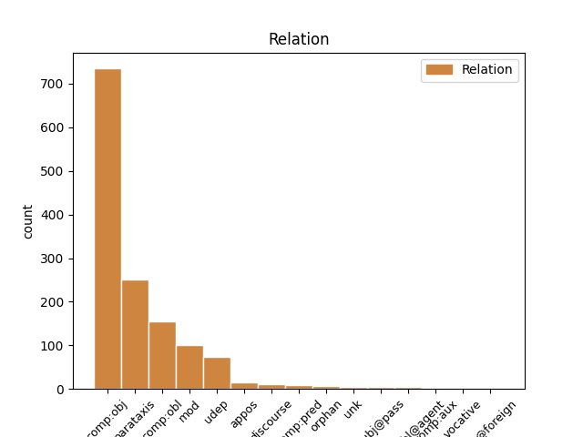
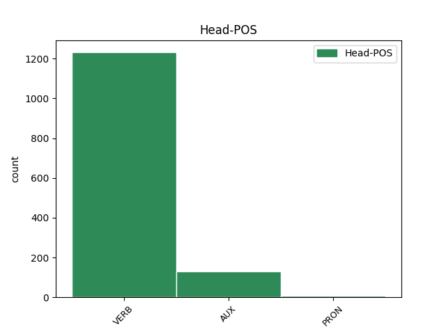
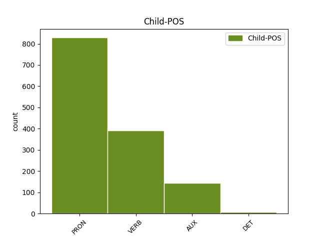

Distribution of features within this leaf



Agreement Rules sorted by frequency.
- When the dependent token is the direct object complements(comp:obj) of the head token, and the dependent token is PRON.
1 Takagi _ _ _ _ 0 _ _ _
2 sestavil _ _ _ _ 0 _ _ _
3 systém _ _ _ _ 0 _ _ _
4 rovnic _ _ _ _ 0 _ _ _
5 rotace _ _ _ _ 0 _ _ _
6 Země _ _ _ _ 0 _ _ _
7 , _ _ _ _ 0 _ _ _
8 do _ _ _ _ 0 _ _ _
9 něhož _ _ _ _ 0 _ _ _
10 zahrnul _ _ _ _ 0 _ _ _
11 všechny _ _ _ _ 0 _ _ _
12 základní _ _ _ _ 0 _ _ _
13 geofyzikální _ _ _ _ 0 _ _ _
14 procesy _ _ _ _ 0 _ _ _
15 , _ _ _ _ 0 _ _ _
16 které _ _ _ _ 0 _ _ _
17 ji on PRON PPFS4--3------- Case=Acc|Gender=Fem|Number=Sing|Person=3|PronType=Prs 18 comp:obj _ _
18 ovlivňují ovlivňovat VERB VB-P---3P-AA--- Aspect=Imp|Mood=Ind|Number=Plur|Person=3|Polarity=Pos|Tense=Pres|VerbForm=Fin|Voice=Act 0 _ _ _
19 a _ _ _ _ 0 _ _ _
20 doprovázejí _ _ _ _ 0 _ _ _
21 . _ _ _ _ 0 _ _ _
1 První _ _ _ _ 0 _ _ _
2 vodorovná _ _ _ _ 0 _ _ _
3 dokazuje dokazovat VERB VB-S---3P-AA--- Aspect=Imp|Mood=Ind|Number=Sing|Person=3|Polarity=Pos|Tense=Pres|VerbForm=Fin|Voice=Act 0 _ _ _
4 , _ _ _ _ 0 _ _ _
5 v _ _ _ _ 0 _ _ _
6 níž _ _ _ _ 0 _ _ _
7 je být VERB VB-S---3P-AA--- Mood=Ind|Number=Sing|Person=3|Polarity=Pos|Tense=Pres|VerbForm=Fin|Voice=Act 3 parataxis _ _
8 pouze _ _ _ _ 0 _ _ _
9 vodík _ _ _ _ 0 _ _ _
10 a _ _ _ _ 0 _ _ _
11 helium _ _ _ _ 0 _ _ _
12 , _ _ _ _ 0 _ _ _
13 je _ _ _ _ 0 _ _ _
14 rudimentární _ _ _ _ 0 _ _ _
15 perioda _ _ _ _ 0 _ _ _
16 , _ _ _ _ 0 _ _ _
17 rudimentum _ _ _ _ 0 _ _ _
18 , _ _ _ _ 0 _ _ _
19 zákrsek _ _ _ _ 0 _ _ _
20 , _ _ _ _ 0 _ _ _
21 nedokonalý _ _ _ _ 0 _ _ _
22 počátek _ _ _ _ 0 _ _ _
23 . _ _ _ _ 0 _ _ _
1 Výsledky _ _ _ _ 0 _ _ _
2 jsou _ _ _ _ 0 _ _ _
3 v _ _ _ _ 0 _ _ _
4 * _ _ _ _ 0 _ _ _
5 a _ _ _ _ 0 _ _ _
6 ukazují ukazovat VERB VB-P---3P-AA--- Aspect=Imp|Mood=Ind|Number=Plur|Person=3|Polarity=Pos|Tense=Pres|VerbForm=Fin|Voice=Act 0 _ _ _
7 názorně _ _ _ _ 0 _ _ _
8 , _ _ _ _ 0 _ _ _
9 jak _ _ _ _ 0 _ _ _
10 se _ _ _ _ 0 _ _ _
11 mění měnit VERB VB-P---3P-AA--- Aspect=Imp|Mood=Ind|Number=Plur|Person=3|Polarity=Pos|Tense=Pres|VerbForm=Fin|Voice=Act 6 comp:obj _ _
12 v _ _ _ _ 0 _ _ _
13 závislosti _ _ _ _ 0 _ _ _
14 na _ _ _ _ 0 _ _ _
15 sklonu _ _ _ _ 0 _ _ _
16 a _ _ _ _ 0 _ _ _
17 pro _ _ _ _ 0 _ _ _
18 * _ _ _ _ 0 _ _ _
19 váha _ _ _ _ 0 _ _ _
20 jednotlivých _ _ _ _ 0 _ _ _
21 kmitočtů _ _ _ _ 0 _ _ _
22 v _ _ _ _ 0 _ _ _
23 celkovém _ _ _ _ 0 _ _ _
24 * _ _ _ _ 0 _ _ _
25 . _ _ _ _ 0 _ _ _
1 I _ _ _ _ 0 _ _ _
2 když _ _ _ _ 0 _ _ _
3 obecně _ _ _ _ 0 _ _ _
4 nelze _ _ _ _ 0 _ _ _
5 uspokojivě _ _ _ _ 0 _ _ _
6 analyticky _ _ _ _ 0 _ _ _
7 řešit _ _ _ _ 0 _ _ _
8 ani _ _ _ _ 0 _ _ _
9 problém _ _ _ _ 0 _ _ _
10 tří _ _ _ _ 0 _ _ _
11 těles _ _ _ _ 0 _ _ _
12 , _ _ _ _ 0 _ _ _
13 přece _ _ _ _ 0 _ _ _
14 každoročně _ _ _ _ 0 _ _ _
15 vychází vycházet VERB VB-S---3P-AA--- Aspect=Imp|Mood=Ind|Number=Sing|Person=3|Polarity=Pos|Tense=Pres|VerbForm=Fin|Voice=Act 0 _ _ _
16 řada _ _ _ _ 0 _ _ _
17 prací _ _ _ _ 0 _ _ _
18 o _ _ _ _ 0 _ _ _
19 problému _ _ _ _ 0 _ _ _
20 mnoha _ _ _ _ 0 _ _ _
21 těles _ _ _ _ 0 _ _ _
22 , _ _ _ _ 0 _ _ _
23 ať _ _ _ _ 0 _ _ _
24 už _ _ _ _ 0 _ _ _
25 jde jít VERB VB-S---3P-AA--- Mood=Ind|Number=Sing|Person=3|Polarity=Pos|Tense=Pres|VerbForm=Fin|Voice=Act 15 mod _ _
26 o _ _ _ _ 0 _ _ _
27 analytická _ _ _ _ 0 _ _ _
28 řešení _ _ _ _ 0 _ _ _
29 speciálních _ _ _ _ 0 _ _ _
30 případů _ _ _ _ 0 _ _ _
31 nebo _ _ _ _ 0 _ _ _
32 o _ _ _ _ 0 _ _ _
33 numerická _ _ _ _ 0 _ _ _
34 řešení _ _ _ _ 0 _ _ _
35 . _ _ _ _ 0 _ _ _
1 Možnosti _ _ _ _ 0 _ _ _
2 odrušení _ _ _ _ 0 _ _ _
3 pomocí _ _ _ _ 0 _ _ _
4 filtrů _ _ _ _ 0 _ _ _
5 jsou být AUX VB-P---3P-AA--- Mood=Ind|Number=Plur|Person=3|Polarity=Pos|Tense=Pres|VerbForm=Fin|Voice=Act 21 parataxis _ _
6 omezeny _ _ _ _ 0 _ _ _
7 na _ _ _ _ 0 _ _ _
8 spodní _ _ _ _ 0 _ _ _
9 okraj _ _ _ _ 0 _ _ _
10 pásma _ _ _ _ 0 _ _ _
11 s _ _ _ _ 0 _ _ _
12 ohledem _ _ _ _ 0 _ _ _
13 na _ _ _ _ 0 _ _ _
14 parametry _ _ _ _ 0 _ _ _
15 součástí _ _ _ _ 0 _ _ _
16 rezonanční _ _ _ _ 0 _ _ _
17 , _ _ _ _ 0 _ _ _
18 kmitočet _ _ _ _ 0 _ _ _
19 používaných _ _ _ _ 0 _ _ _
20 kondenzátorů _ _ _ _ 0 _ _ _
21 je být VERB VB-S---3P-AA--- Mood=Ind|Number=Sing|Person=3|Polarity=Pos|Tense=Pres|VerbForm=Fin|Voice=Act 0 _ _ _
22 pod _ _ _ _ 0 _ _ _
23 # _ _ _ _ 0 _ _ _
24 * _ _ _ _ 0 _ _ _
25 , _ _ _ _ 0 _ _ _
26 významnější _ _ _ _ 0 _ _ _
27 vliv _ _ _ _ 0 _ _ _
28 mají _ _ _ _ 0 _ _ _
29 spíše _ _ _ _ 0 _ _ _
30 konstrukční _ _ _ _ 0 _ _ _
31 úpravy _ _ _ _ 0 _ _ _
32 , _ _ _ _ 0 _ _ _
33 materiál _ _ _ _ 0 _ _ _
34 skříně _ _ _ _ 0 _ _ _
35 lokomotivy _ _ _ _ 0 _ _ _
36 , _ _ _ _ 0 _ _ _
37 obložení _ _ _ _ 0 _ _ _
38 sběračem _ _ _ _ 0 _ _ _
39 , _ _ _ _ 0 _ _ _
40 způsob _ _ _ _ 0 _ _ _
41 zemnění _ _ _ _ 0 _ _ _
42 , _ _ _ _ 0 _ _ _
43 konstrukce _ _ _ _ 0 _ _ _
44 trolejového _ _ _ _ 0 _ _ _
45 vedení _ _ _ _ 0 _ _ _
46 . _ _ _ _ 0 _ _ _
1 Kromě _ _ _ _ 0 _ _ _
2 květu _ _ _ _ 0 _ _ _
3 má _ _ _ _ 0 _ _ _
4 rostlina _ _ _ _ 0 _ _ _
5 nad _ _ _ _ 0 _ _ _
6 zemí _ _ _ _ 0 _ _ _
7 listy _ _ _ _ 0 _ _ _
8 s _ _ _ _ 0 _ _ _
9 krásným _ _ _ _ 0 _ _ _
10 zeleným _ _ _ _ 0 _ _ _
11 zabarvením _ _ _ _ 0 _ _ _
12 , _ _ _ _ 0 _ _ _
13 které _ _ _ _ 0 _ _ _
14 jí on PRON PPFS3--3------- Case=Dat|Gender=Fem|Number=Sing|Person=3|PronType=Prs 15 comp:obl _ LGloss=(ona)
15 dodává dodávat VERB VB-S---3P-AA--- Aspect=Imp|Mood=Ind|Number=Sing|Person=3|Polarity=Pos|Tense=Pres|VerbForm=Fin|Voice=Act 0 _ _ _
16 chlorofyl _ _ _ _ 0 _ _ _
17 , _ _ _ _ 0 _ _ _
18 zelené _ _ _ _ 0 _ _ _
19 barvivo _ _ _ _ 0 _ _ _
20 . _ _ _ _ 0 _ _ _
1 Pokud _ _ _ _ 0 _ _ _
2 jde _ _ _ _ 0 _ _ _
3 o _ _ _ _ 0 _ _ _
4 rys _ _ _ _ 0 _ _ _
5 kodifikovanosti _ _ _ _ 0 _ _ _
6 normy _ _ _ _ 0 _ _ _
7 , _ _ _ _ 0 _ _ _
8 liší lišit VERB VB-S---3P-AA--- Aspect=Imp|Mood=Ind|Number=Sing|Person=3|Polarity=Pos|Tense=Pres|VerbForm=Fin|Voice=Act 0 _ _ _
9 se _ _ _ _ 0 _ _ _
10 jím on PRON PPZS7--3------- Case=Ins|Gender=Masc,Neut|Number=Sing|Person=3|PronType=Prs 8 udep _ LGloss=(on)
11 spisovný _ _ _ _ 0 _ _ _
12 jazyk _ _ _ _ 0 _ _ _
13 od _ _ _ _ 0 _ _ _
14 dialektu _ _ _ _ 0 _ _ _
15 i _ _ _ _ 0 _ _ _
16 od _ _ _ _ 0 _ _ _
17 jazyka _ _ _ _ 0 _ _ _
18 běžně _ _ _ _ 0 _ _ _
19 mluveného _ _ _ _ 0 _ _ _
20 . _ _ _ _ 0 _ _ _
1 Necháme _ _ _ _ 0 _ _ _
2 - _ _ _ _ 0 _ _ _
3 li _ _ _ _ 0 _ _ _
4 stranou _ _ _ _ 0 _ _ _
5 některé _ _ _ _ 0 _ _ _
6 praktické _ _ _ _ 0 _ _ _
7 aplikace _ _ _ _ 0 _ _ _
8 modelování _ _ _ _ 0 _ _ _
9 složitých _ _ _ _ 0 _ _ _
10 potenciálů _ _ _ _ 0 _ _ _
11 těles _ _ _ _ 0 _ _ _
12 , _ _ _ _ 0 _ _ _
13 ukazují ukazovat VERB VB-P---3P-AA--- Aspect=Imp|Mood=Ind|Number=Plur|Person=3|Polarity=Pos|Tense=Pres|VerbForm=Fin|Voice=Act 0 _ _ _
14 nám _ _ _ _ 0 _ _ _
15 práce _ _ _ _ 0 _ _ _
16 tohoto _ _ _ _ 0 _ _ _
17 druhu _ _ _ _ 0 _ _ _
18 , _ _ _ _ 0 _ _ _
19 které _ _ _ _ 0 _ _ _
20 závěry _ _ _ _ 0 _ _ _
21 nebeské _ _ _ _ 0 _ _ _
22 mechaniky _ _ _ _ 0 _ _ _
23 jsou být AUX VB-P---3P-AA--- Mood=Ind|Number=Plur|Person=3|Polarity=Pos|Tense=Pres|VerbForm=Fin|Voice=Act 13 comp:obj _ _
24 důsledkem _ _ _ _ 0 _ _ _
25 speciálních _ _ _ _ 0 _ _ _
26 předpokladů _ _ _ _ 0 _ _ _
27 a _ _ _ _ 0 _ _ _
28 které _ _ _ _ 0 _ _ _
29 mají _ _ _ _ 0 _ _ _
30 obecnější _ _ _ _ 0 _ _ _
31 platnost _ _ _ _ 0 _ _ _
32 . _ _ _ _ 0 _ _ _
1 Pro _ _ _ _ 0 _ _ _
2 tuto _ _ _ _ 0 _ _ _
3 obtížnost _ _ _ _ 0 _ _ _
4 a _ _ _ _ 0 _ _ _
5 složitost _ _ _ _ 0 _ _ _
6 a _ _ _ _ 0 _ _ _
7 také _ _ _ _ 0 _ _ _
8 proto _ _ _ _ 0 _ _ _
9 , _ _ _ _ 0 _ _ _
10 že _ _ _ _ 0 _ _ _
11 jednodušší _ _ _ _ 0 _ _ _
12 řešení _ _ _ _ 0 _ _ _
13 nevyžadují _ _ _ _ 0 _ _ _
14 příliš _ _ _ _ 0 _ _ _
15 velké _ _ _ _ 0 _ _ _
16 předinvestice _ _ _ _ 0 _ _ _
17 , _ _ _ _ 0 _ _ _
18 dává dávat VERB VB-S---3P-AA--- Aspect=Imp|Mood=Ind|Number=Sing|Person=3|Polarity=Pos|Tense=Pres|VerbForm=Fin|Voice=Act 0 _ _ _
19 se _ _ _ _ 0 _ _ _
20 jim _ _ _ _ 0 _ _ _
21 někdy _ _ _ _ 0 _ _ _
22 přednost _ _ _ _ 0 _ _ _
23 i _ _ _ _ 0 _ _ _
24 tehdy _ _ _ _ 0 _ _ _
25 , _ _ _ _ 0 _ _ _
26 kdy _ _ _ _ 0 _ _ _
27 to _ _ _ _ 0 _ _ _
28 z _ _ _ _ 0 _ _ _
29 hospodářského _ _ _ _ 0 _ _ _
30 hlediska _ _ _ _ 0 _ _ _
31 není být AUX VB-S---3P-NA--- Mood=Ind|Number=Sing|Person=3|Polarity=Neg|Tense=Pres|VerbForm=Fin|Voice=Act 18 mod _ _
32 správné _ _ _ _ 0 _ _ _
33 . _ _ _ _ 0 _ _ _
1 Částice _ _ _ _ 0 _ _ _
2 * _ _ _ _ 0 _ _ _
3 může _ _ _ _ 0 _ _ _
4 proletět _ _ _ _ 0 _ _ _
5 přímočaře _ _ _ _ 0 _ _ _
6 statisíci _ _ _ _ 0 _ _ _
7 atomů _ _ _ _ 0 _ _ _
8 a _ _ _ _ 0 _ _ _
9 neodchýlí _ _ _ _ 0 _ _ _
10 se _ _ _ _ 0 _ _ _
11 ze _ _ _ _ 0 _ _ _
12 svého _ _ _ _ 0 _ _ _
13 směru _ _ _ _ 0 _ _ _
14 , _ _ _ _ 0 _ _ _
15 pouze _ _ _ _ 0 _ _ _
16 ionisuje ionizovat VERB VB-S---3P-AA--- Mood=Ind|Number=Sing|Person=3|Polarity=Pos|Tense=Pres|VerbForm=Fin|Voice=Act 0 _ _ _
17 , _ _ _ _ 0 _ _ _
18 odtrhává odtrhávat VERB VB-S---3P-AA--- Aspect=Imp|Mood=Ind|Number=Sing|Person=3|Polarity=Pos|Tense=Pres|VerbForm=Fin|Voice=Act 16 appos _ LDeriv=odtrhat
19 z _ _ _ _ 0 _ _ _
20 atomu _ _ _ _ 0 _ _ _
21 elektrony _ _ _ _ 0 _ _ _
22 . _ _ _ _ 0 _ _ _
1 Mnozí _ _ _ _ 0 _ _ _
2 ptáci _ _ _ _ 0 _ _ _
3 se _ _ _ _ 0 _ _ _
4 ovšem _ _ _ _ 0 _ _ _
5 líhnou _ _ _ _ 0 _ _ _
6 zcela _ _ _ _ 0 _ _ _
7 neopeření _ _ _ _ 0 _ _ _
8 , _ _ _ _ 0 _ _ _
9 holata _ _ _ _ 0 _ _ _
10 , _ _ _ _ 0 _ _ _
11 a _ _ _ _ 0 _ _ _
12 peří _ _ _ _ 0 _ _ _
13 jim on PRON PPXP3--3------- Case=Dat|Number=Plur|Person=3|PronType=Prs 14 discourse _ _
14 vyrůstá vyrůstat VERB VB-S---3P-AA--- Aspect=Imp|Mood=Ind|Number=Sing|Person=3|Polarity=Pos|Tense=Pres|VerbForm=Fin|Voice=Act 0 _ _ _
15 teprve _ _ _ _ 0 _ _ _
16 během _ _ _ _ 0 _ _ _
17 prvních _ _ _ _ 0 _ _ _
18 dnů _ _ _ _ 0 _ _ _
19 života _ _ _ _ 0 _ _ _
20 . _ _ _ _ 0 _ _ _
1 Kapacitní _ _ _ _ 0 _ _ _
2 vazbou _ _ _ _ 0 _ _ _
3 , _ _ _ _ 0 _ _ _
4 indukované _ _ _ _ 0 _ _ _
5 napětí _ _ _ _ 0 _ _ _
6 závisí záviset VERB VB-S---3P-AA--- Aspect=Imp|Mood=Ind|Number=Sing|Person=3|Polarity=Pos|Tense=Pres|VerbForm=Fin|Voice=Act 0 _ _ _
7 pouze _ _ _ _ 0 _ _ _
8 na _ _ _ _ 0 _ _ _
9 napětí _ _ _ _ 0 _ _ _
10 troleje _ _ _ _ 0 _ _ _
11 , _ _ _ _ 0 _ _ _
12 ne _ _ _ _ 0 _ _ _
13 na _ _ _ _ 0 _ _ _
14 kmitočtu _ _ _ _ 0 _ _ _
15 a _ _ _ _ 0 _ _ _
16 délce _ _ _ _ 0 _ _ _
17 souběhu _ _ _ _ 0 _ _ _
18 , _ _ _ _ 0 _ _ _
19 na _ _ _ _ 0 _ _ _
20 těchto _ _ _ _ 0 _ _ _
21 veličinách _ _ _ _ 0 _ _ _
22 závisí záviset VERB VB-S---3P-AA--- Aspect=Imp|Mood=Ind|Number=Sing|Person=3|Polarity=Pos|Tense=Pres|VerbForm=Fin|Voice=Act 6 orphan _ _
23 nabíjecí _ _ _ _ 0 _ _ _
24 proud _ _ _ _ 0 _ _ _
25 . _ _ _ _ 0 _ _ _
1 Ohebné _ _ _ _ 0 _ _ _
2 ocelové _ _ _ _ 0 _ _ _
3 měřítko _ _ _ _ 0 _ _ _
4 , _ _ _ _ 0 _ _ _
5 závaží _ _ _ _ 0 _ _ _
6 na _ _ _ _ 0 _ _ _
7 šňůře _ _ _ _ 0 _ _ _
8 , _ _ _ _ 0 _ _ _
9 vodováha _ _ _ _ 0 _ _ _
10 , _ _ _ _ 0 _ _ _
11 kladiva _ _ _ _ 0 _ _ _
12 , _ _ _ _ 0 _ _ _
13 průbojník _ _ _ _ 0 _ _ _
14 , _ _ _ _ 0 _ _ _
15 plochý _ _ _ _ 0 _ _ _
16 sekáč _ _ _ _ 0 _ _ _
17 , _ _ _ _ 0 _ _ _
18 křížový _ _ _ _ 0 _ _ _
19 sekáč _ _ _ _ 0 _ _ _
20 na _ _ _ _ 0 _ _ _
21 drážky _ _ _ _ 0 _ _ _
22 , _ _ _ _ 0 _ _ _
23 trubkový _ _ _ _ 0 _ _ _
24 sekáč _ _ _ _ 0 _ _ _
25 na _ _ _ _ 0 _ _ _
26 díry _ _ _ _ 0 _ _ _
27 ve _ _ _ _ 0 _ _ _
28 zdi _ _ _ _ 0 _ _ _
29 , _ _ _ _ 0 _ _ _
30 trubka _ _ _ _ 0 _ _ _
31 se _ _ _ _ 0 _ _ _
32 zuby _ _ _ _ 0 _ _ _
33 na _ _ _ _ 0 _ _ _
34 konci _ _ _ _ 0 _ _ _
35 , _ _ _ _ 0 _ _ _
36 při _ _ _ _ 0 _ _ _
37 sekání _ _ _ _ 0 _ _ _
38 se _ _ _ _ 0 _ _ _
39 otáčí _ _ _ _ 0 _ _ _
40 , _ _ _ _ 0 _ _ _
41 tužlík _ _ _ _ 0 _ _ _
42 k _ _ _ _ 0 _ _ _
43 pěchování _ _ _ _ 0 _ _ _
44 , _ _ _ _ 0 _ _ _
45 těsnění _ _ _ _ 0 _ _ _
46 konopného _ _ _ _ 0 _ _ _
47 provazce _ _ _ _ 0 _ _ _
48 nebo _ _ _ _ 0 _ _ _
49 kovové _ _ _ _ 0 _ _ _
50 vlny _ _ _ _ 0 _ _ _
51 do _ _ _ _ 0 _ _ _
52 hrdla _ _ _ _ 0 _ _ _
53 trubek _ _ _ _ 0 _ _ _
54 , _ _ _ _ 0 _ _ _
55 má _ _ _ _ 0 _ _ _
56 tvar _ _ _ _ 0 _ _ _
57 ohnutého _ _ _ _ 0 _ _ _
58 plochého _ _ _ _ 0 _ _ _
59 železa _ _ _ _ 0 _ _ _
60 , _ _ _ _ 0 _ _ _
61 obyčejné _ _ _ _ 0 _ _ _
62 kleště _ _ _ _ 0 _ _ _
63 , _ _ _ _ 0 _ _ _
64 kleště _ _ _ _ 0 _ _ _
65 na _ _ _ _ 0 _ _ _
66 trubky _ _ _ _ 0 _ _ _
67 , _ _ _ _ 0 _ _ _
68 sada _ _ _ _ 0 _ _ _
69 maticových _ _ _ _ 0 _ _ _
70 klíčů _ _ _ _ 0 _ _ _
71 , _ _ _ _ 0 _ _ _
72 posuvný _ _ _ _ 0 _ _ _
73 klíč _ _ _ _ 0 _ _ _
74 francouzský _ _ _ _ 0 _ _ _
75 , _ _ _ _ 0 _ _ _
76 ruční _ _ _ _ 0 _ _ _
77 pila _ _ _ _ 0 _ _ _
78 na _ _ _ _ 0 _ _ _
79 kov _ _ _ _ 0 _ _ _
80 a _ _ _ _ 0 _ _ _
81 několik _ _ _ _ 0 _ _ _
82 pilových _ _ _ _ 0 _ _ _
83 listů _ _ _ _ 0 _ _ _
84 , _ _ _ _ 0 _ _ _
85 trubkořez _ _ _ _ 0 _ _ _
86 s _ _ _ _ 0 _ _ _
87 řezacími _ _ _ _ 0 _ _ _
88 kolečky _ _ _ _ 0 _ _ _
89 , _ _ _ _ 0 _ _ _
90 jímž _ _ _ _ 0 _ _ _
91 točíme _ _ _ _ 0 _ _ _
92 kolem _ _ _ _ 0 _ _ _
93 řezané _ _ _ _ 0 _ _ _
94 trubky _ _ _ _ 0 _ _ _
95 , _ _ _ _ 0 _ _ _
96 řehtačka _ _ _ _ 0 _ _ _
97 k _ _ _ _ 0 _ _ _
98 ručnímu _ _ _ _ 0 _ _ _
99 vrtání _ _ _ _ 0 _ _ _
100 děr _ _ _ _ 0 _ _ _
101 na _ _ _ _ 0 _ _ _
102 špatně _ _ _ _ 0 _ _ _
103 přístupných _ _ _ _ 0 _ _ _
104 místech _ _ _ _ 0 _ _ _
105 , _ _ _ _ 0 _ _ _
106 vrták _ _ _ _ 0 _ _ _
107 se _ _ _ _ 0 _ _ _
108 vloží _ _ _ _ 0 _ _ _
109 do _ _ _ _ 0 _ _ _
110 vřetena _ _ _ _ 0 _ _ _
111 , _ _ _ _ 0 _ _ _
112 točí točit VERB VB-S---3P-AA--- Aspect=Imp|Mood=Ind|Number=Sing|Person=3|Polarity=Pos|Tense=Pres|VerbForm=Fin|Voice=Act 0 _ _ _
113 se _ _ _ _ 0 _ _ _
114 jím on PRON PPZS7--3------- Case=Ins|Gender=Masc,Neut|Number=Sing|Person=3|PronType=Prs 112 comp:obl@agent _ LGloss=(on)
115 kýváním _ _ _ _ 0 _ _ _
116 páky _ _ _ _ 0 _ _ _
117 , _ _ _ _ 0 _ _ _
118 jejíž _ _ _ _ 0 _ _ _
119 západka _ _ _ _ 0 _ _ _
120 zabírá _ _ _ _ 0 _ _ _
121 do _ _ _ _ 0 _ _ _
122 zubů _ _ _ _ 0 _ _ _
123 , _ _ _ _ 0 _ _ _
124 rohatky _ _ _ _ 0 _ _ _
125 , _ _ _ _ 0 _ _ _
126 vrtáky _ _ _ _ 0 _ _ _
127 , _ _ _ _ 0 _ _ _
128 ruční _ _ _ _ 0 _ _ _
129 vrtačka _ _ _ _ 0 _ _ _
130 , _ _ _ _ 0 _ _ _
131 sada _ _ _ _ 0 _ _ _
132 závitníků _ _ _ _ 0 _ _ _
133 , _ _ _ _ 0 _ _ _
134 závitnice _ _ _ _ 0 _ _ _
135 , _ _ _ _ 0 _ _ _
136 očka _ _ _ _ 0 _ _ _
137 , _ _ _ _ 0 _ _ _
138 závitová _ _ _ _ 0 _ _ _
139 hlava _ _ _ _ 0 _ _ _
140 k _ _ _ _ 0 _ _ _
141 řezání _ _ _ _ 0 _ _ _
142 různých _ _ _ _ 0 _ _ _
143 závitů _ _ _ _ 0 _ _ _
144 na _ _ _ _ 0 _ _ _
145 trubkách _ _ _ _ 0 _ _ _
146 vyměnitelnými _ _ _ _ 0 _ _ _
147 závitovými _ _ _ _ 0 _ _ _
148 čelistmi _ _ _ _ 0 _ _ _
149 , _ _ _ _ 0 _ _ _
150 přenosný _ _ _ _ 0 _ _ _
151 instalatérský _ _ _ _ 0 _ _ _
152 trubkový _ _ _ _ 0 _ _ _
153 svěrák _ _ _ _ 0 _ _ _
154 , _ _ _ _ 0 _ _ _
155 na _ _ _ _ 0 _ _ _
156 jehož _ _ _ _ 0 _ _ _
157 plošině _ _ _ _ 0 _ _ _
158 stojíme _ _ _ _ 0 _ _ _
159 , _ _ _ _ 0 _ _ _
160 aby _ _ _ _ 0 _ _ _
161 by _ _ _ _ 0 _ _ _
162 se _ _ _ _ 0 _ _ _
163 svěrák _ _ _ _ 0 _ _ _
164 nepřevracel _ _ _ _ 0 _ _ _
165 , _ _ _ _ 0 _ _ _
166 několik _ _ _ _ 0 _ _ _
167 pilníků _ _ _ _ 0 _ _ _
168 , _ _ _ _ 0 _ _ _
169 jemný _ _ _ _ 0 _ _ _
170 a _ _ _ _ 0 _ _ _
171 hrubý _ _ _ _ 0 _ _ _
172 , _ _ _ _ 0 _ _ _
173 obdélníkový _ _ _ _ 0 _ _ _
174 , _ _ _ _ 0 _ _ _
175 půlkruhový _ _ _ _ 0 _ _ _
176 , _ _ _ _ 0 _ _ _
177 kruhový _ _ _ _ 0 _ _ _
178 , _ _ _ _ 0 _ _ _
179 trojúhelníkový _ _ _ _ 0 _ _ _
180 , _ _ _ _ 0 _ _ _
181 plochý _ _ _ _ 0 _ _ _
182 , _ _ _ _ 0 _ _ _
183 škrabák _ _ _ _ 0 _ _ _
184 , _ _ _ _ 0 _ _ _
185 menší _ _ _ _ 0 _ _ _
186 a _ _ _ _ 0 _ _ _
187 větší _ _ _ _ 0 _ _ _
188 šroubovák _ _ _ _ 0 _ _ _
189 , _ _ _ _ 0 _ _ _
190 štětce _ _ _ _ 0 _ _ _
191 , _ _ _ _ 0 _ _ _
192 hadry _ _ _ _ 0 _ _ _
193 . _ _ _ _ 0 _ _ _
1 Dvourozměrná _ _ _ _ 0 _ _ _
2 interpolace _ _ _ _ 0 _ _ _
3 vyhlazování _ _ _ _ 0 _ _ _
4 naleznou naleznout VERB VB-P---3P-AA--- Mood=Ind|Number=Plur|Person=3|Polarity=Pos|Tense=Pres|VerbForm=Fin|Voice=Act 0 _ _ _
5 jistě _ _ _ _ 0 _ _ _
6 použití _ _ _ _ 0 _ _ _
7 všude _ _ _ _ 0 _ _ _
8 tam _ _ _ _ 0 _ _ _
9 , _ _ _ _ 0 _ _ _
10 kde _ _ _ _ 0 _ _ _
11 jsou být AUX VB-P---3P-AA--- Mood=Ind|Number=Plur|Person=3|Polarity=Pos|Tense=Pres|VerbForm=Fin|Voice=Act 4 udep _ _
12 zpracovávána _ _ _ _ 0 _ _ _
13 měření _ _ _ _ 0 _ _ _
14 prováděná _ _ _ _ 0 _ _ _
15 na _ _ _ _ 0 _ _ _
16 ploše _ _ _ _ 0 _ _ _
17 v _ _ _ _ 0 _ _ _
18 gravimetrii _ _ _ _ 0 _ _ _
19 , _ _ _ _ 0 _ _ _
20 geomagnetismu _ _ _ _ 0 _ _ _
21 , _ _ _ _ 0 _ _ _
22 geodézii _ _ _ _ 0 _ _ _
23 . _ _ _ _ 0 _ _ _
1 V _ _ _ _ 0 _ _ _
2 další _ _ _ _ 0 _ _ _
3 části _ _ _ _ 0 _ _ _
4 směrnice _ _ _ _ 0 _ _ _
5 je být AUX VB-S---3P-AA--- Mood=Ind|Number=Sing|Person=3|Polarity=Pos|Tense=Pres|VerbForm=Fin|Voice=Act 0 _ _ _
6 zevrubně _ _ _ _ 0 _ _ _
7 rozvedeno _ _ _ _ 0 _ _ _
8 , _ _ _ _ 0 _ _ _
9 co _ _ _ _ 0 _ _ _
10 má mít VERB VB-S---3P-AA--- Mood=Ind|Number=Sing|Person=3|Polarity=Pos|Tense=Pres|VerbForm=Fin|Voice=Act 5 subj@pass _ _
11 být _ _ _ _ 0 _ _ _
12 v _ _ _ _ 0 _ _ _
13 návrhu _ _ _ _ 0 _ _ _
14 na _ _ _ _ 0 _ _ _
15 provedení _ _ _ _ 0 _ _ _
16 delimitace _ _ _ _ 0 _ _ _
17 obsaženo _ _ _ _ 0 _ _ _
18 , _ _ _ _ 0 _ _ _
19 s _ _ _ _ 0 _ _ _
20 uvedením _ _ _ _ 0 _ _ _
21 důvodů _ _ _ _ 0 _ _ _
22 delimitace _ _ _ _ 0 _ _ _
23 a _ _ _ _ 0 _ _ _
24 ekonomického _ _ _ _ 0 _ _ _
25 přínosu _ _ _ _ 0 _ _ _
26 , _ _ _ _ 0 _ _ _
27 který _ _ _ _ 0 _ _ _
28 z _ _ _ _ 0 _ _ _
29 delimitace _ _ _ _ 0 _ _ _
30 vznikne _ _ _ _ 0 _ _ _
31 . _ _ _ _ 0 _ _ _
1 V _ _ _ _ 0 _ _ _
2 dalším _ _ _ _ 0 _ _ _
3 * _ _ _ _ 0 _ _ _
4 bude být AUX VB-S---3F-AA--- Mood=Ind|Number=Sing|Person=3|Polarity=Pos|Tense=Fut|VerbForm=Fin|Voice=Act 0 _ _ _
5 vysvětleno _ _ _ _ 0 _ _ _
6 , _ _ _ _ 0 _ _ _
7 proč _ _ _ _ 0 _ _ _
8 je být AUX VB-S---3P-AA--- Mood=Ind|Number=Sing|Person=3|Polarity=Pos|Tense=Pres|VerbForm=Fin|Voice=Act 4 subj@pass _ _
9 v _ _ _ _ 0 _ _ _
10 krystalografii _ _ _ _ 0 _ _ _
11 nezbytné _ _ _ _ 0 _ _ _
12 vyměřovat _ _ _ _ 0 _ _ _
13 polohy _ _ _ _ 0 _ _ _
14 krystalových _ _ _ _ 0 _ _ _
15 ploch _ _ _ _ 0 _ _ _
16 pomocí _ _ _ _ 0 _ _ _
17 poměrů _ _ _ _ 0 _ _ _
18 jejich _ _ _ _ 0 _ _ _
19 úseků _ _ _ _ 0 _ _ _
20 na _ _ _ _ 0 _ _ _
21 souřadných _ _ _ _ 0 _ _ _
22 osách _ _ _ _ 0 _ _ _
23 , _ _ _ _ 0 _ _ _
24 a _ _ _ _ 0 _ _ _
25 nikoliv _ _ _ _ 0 _ _ _
26 v _ _ _ _ 0 _ _ _
27 absolutních _ _ _ _ 0 _ _ _
28 délkových _ _ _ _ 0 _ _ _
29 jednotkách _ _ _ _ 0 _ _ _
30 . _ _ _ _ 0 _ _ _
1 Korea _ _ _ _ 0 _ _ _
2 je _ _ _ _ 0 _ _ _
3 výspou _ _ _ _ 0 _ _ _
4 socialismu _ _ _ _ 0 _ _ _
5 na _ _ _ _ 0 _ _ _
6 východě _ _ _ _ 0 _ _ _
7 , _ _ _ _ 0 _ _ _
8 tak _ _ _ _ 0 _ _ _
9 jako _ _ _ _ 0 _ _ _
10 je být AUX VB-S---3P-AA--- Mood=Ind|Number=Sing|Person=3|Polarity=Pos|Tense=Pres|VerbForm=Fin|Voice=Act 0 _ _ _
11 jí on PRON PPFS7--3------- Case=Ins|Gender=Fem|Number=Sing|Person=3|PronType=Prs 10 comp:pred _ LGloss=(ona)
12 Československo _ _ _ _ 0 _ _ _
13 na _ _ _ _ 0 _ _ _
14 západě _ _ _ _ 0 _ _ _
15 . _ _ _ _ 0 _ _ _
1 Ty _ _ _ _ 0 _ _ _
2 si _ _ _ _ 0 _ _ _
3 to _ _ _ _ 0 _ _ _
4 umíš umět VERB VB-S---2P-AA--- Mood=Ind|Number=Sing|Person=2|Polarity=Pos|Tense=Pres|VerbForm=Fin|Voice=Act 0 _ _ _
5 zařídit _ _ _ _ 0 _ _ _
6 , _ _ _ _ 0 _ _ _
7 ty ty PRON PP-S5--2------- Case=Voc|Number=Sing|Person=2|PronType=Prs 4 vocative _ _
8 dolarovej _ _ _ _ 0 _ _ _
9 králi _ _ _ _ 0 _ _ _
10 , _ _ _ _ 0 _ _ _
11 hučí _ _ _ _ 0 _ _ _
12 automechanik _ _ _ _ 0 _ _ _
13 Dalibor _ _ _ _ 0 _ _ _
14 . _ _ _ _ 0 _ _ _
1 A _ _ _ _ 0 _ _ _
2 i _ _ _ _ 0 _ _ _
3 když _ _ _ _ 0 _ _ _
4 by být AUX Vc------------- Mood=Cnd|Person=3|VerbForm=Fin 0 _ _ _
5 , _ _ _ _ 0 _ _ _
6 neprozradil _ _ _ _ 0 _ _ _
7 by být AUX Vc-X---3------- Mood=Cnd|Person=3|VerbForm=Fin 4 comp:aux _ _
8 ho _ _ _ _ 0 _ _ _
9 . _ _ _ _ 0 _ _ _
1 Uvádí _ _ _ _ 0 _ _ _
2 i _ _ _ _ 0 _ _ _
3 základní _ _ _ _ 0 _ _ _
4 názory _ _ _ _ 0 _ _ _
5 na _ _ _ _ 0 _ _ _
6 motivační _ _ _ _ 0 _ _ _
7 působení _ _ _ _ 0 _ _ _
8 frustrace _ _ _ _ 0 _ _ _
9 a _ _ _ _ 0 _ _ _
10 konfliktů _ _ _ _ 0 _ _ _
11 a _ _ _ _ 0 _ _ _
12 zabývá _ _ _ _ 0 _ _ _
13 se _ _ _ _ 0 _ _ _
14 vztahem _ _ _ _ 0 _ _ _
15 motivace _ _ _ _ 0 _ _ _
16 k _ _ _ _ 0 _ _ _
17 našemu můj DET PSZS3-P1------- Case=Dat|Gender=Masc,Neut|Number=Sing|Number[psor]=Plur|Person=1|Poss=Yes|PronType=Prs 18 mod _ LGloss=(přivlast.)
18 já já PRON PP-S1--1------- Case=Nom|Number=Sing|Person=1|PronType=Prs 0 _ _ _
19 . _ _ _ _ 0 _ _ _
1 Přiblíží _ _ _ _ 0 _ _ _
2 - _ _ _ _ 0 _ _ _
3 li _ _ _ _ 0 _ _ _
4 se _ _ _ _ 0 _ _ _
5 vzájemně _ _ _ _ 0 _ _ _
6 k _ _ _ _ 0 _ _ _
7 sobě _ _ _ _ 0 _ _ _
8 dva _ _ _ _ 0 _ _ _
9 atomy _ _ _ _ 0 _ _ _
10 , _ _ _ _ 0 _ _ _
11 nastane _ _ _ _ 0 _ _ _
12 rozštěpení _ _ _ _ 0 _ _ _
13 původních _ _ _ _ 0 _ _ _
14 úrovní _ _ _ _ 0 _ _ _
15 samotného _ _ _ _ 0 _ _ _
16 atomu _ _ _ _ 0 _ _ _
17 , _ _ _ _ 0 _ _ _
18 takže _ _ _ _ 0 _ _ _
19 se _ _ _ _ 0 _ _ _
20 z _ _ _ _ 0 _ _ _
21 každé _ _ _ _ 0 _ _ _
22 původní _ _ _ _ 0 _ _ _
23 úrovně _ _ _ _ 0 _ _ _
24 stanou stát VERB VB-P---3P-AA--- Mood=Ind|Number=Plur|Person=3|Polarity=Pos|Tense=Pres|VerbForm=Fin|Voice=Act 0 _ _ _
25 dvě _ _ _ _ 0 _ _ _
26 nové _ _ _ _ 0 _ _ _
27 , _ _ _ _ 0 _ _ _
28 které _ _ _ _ 0 _ _ _
29 jsou být AUX VB-P---3P-AA--- Mood=Ind|Number=Plur|Person=3|Polarity=Pos|Tense=Pres|VerbForm=Fin|Voice=Act 24 unk _ _
30 vzájemně _ _ _ _ 0 _ _ _
31 poněkud _ _ _ _ 0 _ _ _
32 posunuté _ _ _ _ 0 _ _ _
33 proti _ _ _ _ 0 _ _ _
34 původní _ _ _ _ 0 _ _ _
35 poloze _ _ _ _ 0 _ _ _
36 . _ _ _ _ 0 _ _ _
1 Anglická _ _ _ _ 0 _ _ _
2 věta _ _ _ _ 0 _ _ _
3 they they PRON PPXPX--3------- Foreign=Yes|Number=Plur|Person=3|PronType=Prs 0 _ _ _
4 are are VERB VB-P---3P-AA--- Foreign=Yes|Mood=Ind|Number=Plur|Person=3|Polarity=Pos|Tense=Pres|VerbForm=Fin|Voice=Act 3 flat@foreign _ _
5 eating _ _ _ _ 0 _ _ _
6 apples _ _ _ _ 0 _ _ _
7 může _ _ _ _ 0 _ _ _
8 mít _ _ _ _ 0 _ _ _
9 v _ _ _ _ 0 _ _ _
10 češtině _ _ _ _ 0 _ _ _
11 význam _ _ _ _ 0 _ _ _
12 jedí _ _ _ _ 0 _ _ _
13 jablka _ _ _ _ 0 _ _ _
14 , _ _ _ _ 0 _ _ _
15 nebo _ _ _ _ 0 _ _ _
16 jsou _ _ _ _ 0 _ _ _
17 to _ _ _ _ 0 _ _ _
18 jedlá _ _ _ _ 0 _ _ _
19 jablka _ _ _ _ 0 _ _ _
20 . _ _ _ _ 0 _ _ _
1 Říční _ _ _ _ 0 _ _ _
2 písky _ _ _ _ 0 _ _ _
3 nemají mít VERB VB-P---3P-NA--- Mood=Ind|Number=Plur|Person=3|Polarity=Neg|Tense=Pres|VerbForm=Fin|Voice=Act 0 _ _ _
4 hlinitou _ _ _ _ 0 _ _ _
5 příměs _ _ _ _ 0 _ _ _
6 , _ _ _ _ 0 _ _ _
7 jsou být AUX VB-P---3P-AA--- Mood=Ind|Number=Plur|Person=3|Polarity=Pos|Tense=Pres|VerbForm=Fin|Voice=Act 3 appos _ _
8 tedy _ _ _ _ 0 _ _ _
9 ostré _ _ _ _ 0 _ _ _
10 , _ _ _ _ 0 _ _ _
11 omítky _ _ _ _ 0 _ _ _
12 z _ _ _ _ 0 _ _ _
13 nich _ _ _ _ 0 _ _ _
14 udělané _ _ _ _ 0 _ _ _
15 sjíždějí _ _ _ _ 0 _ _ _
16 , _ _ _ _ 0 _ _ _
17 ale _ _ _ _ 0 _ _ _
18 jako _ _ _ _ 0 _ _ _
19 součást _ _ _ _ 0 _ _ _
20 betonové _ _ _ _ 0 _ _ _
21 směsi _ _ _ _ 0 _ _ _
22 jsou _ _ _ _ 0 _ _ _
23 nenahraditelné _ _ _ _ 0 _ _ _
24 . _ _ _ _ 0 _ _ _
1 Vápnomilné _ _ _ _ 0 _ _ _
2 jsou být VERB VB-P---3P-AA--- Mood=Ind|Number=Plur|Person=3|Polarity=Pos|Tense=Pres|VerbForm=Fin|Voice=Act 0 _ _ _
3 takové _ _ _ _ 0 _ _ _
4 , _ _ _ _ 0 _ _ _
5 které _ _ _ _ 0 _ _ _
6 vápník _ _ _ _ 0 _ _ _
7 snesou snést VERB VB-P---3P-AA--- Mood=Ind|Number=Plur|Person=3|Polarity=Pos|Tense=Pres|VerbForm=Fin|Voice=Act 2 unk _ SpaceAfter=No
8 , _ _ _ _ 0 _ _ _
9 není _ _ _ _ 0 _ _ _
10 však _ _ _ _ 0 _ _ _
11 nutné _ _ _ _ 0 _ _ _
12 jim _ _ _ _ 0 _ _ _
13 ho _ _ _ _ 0 _ _ _
14 přidávat _ _ _ _ 0 _ _ _
15 . _ _ _ _ 0 _ _ _
Disagree Examples:
1 Řidič _ _ _ _ 0 _ _ _
2 napříště _ _ _ _ 0 _ _ _
3 odpovídá odpovídat VERB VB-S---3P-AA--- Aspect=Imp|Mood=Ind|Number=Sing|Person=3|Polarity=Pos|Tense=Pres|VerbForm=Fin|Voice=Act 0 _ _ _
4 podle _ _ _ _ 0 _ _ _
5 svých _ _ _ _ 0 _ _ _
6 možností _ _ _ _ 0 _ _ _
7 i _ _ _ _ 0 _ _ _
8 za _ _ _ _ 0 _ _ _
9 to _ _ _ _ 0 _ _ _
10 , _ _ _ _ 0 _ _ _
11 že _ _ _ _ 0 _ _ _
12 přepravované _ _ _ _ 0 _ _ _
13 osoby _ _ _ _ 0 _ _ _
14 dodrží _ _ _ _ 0 _ _ _
15 povinnost _ _ _ _ 0 _ _ _
16 připoutat _ _ _ _ 0 _ _ _
17 se _ _ _ _ 0 _ _ _
18 bezpečnostními _ _ _ _ 0 _ _ _
19 pásy _ _ _ _ 0 _ _ _
20 nebo _ _ _ _ 0 _ _ _
21 užít _ _ _ _ 0 _ _ _
22 ochranné _ _ _ _ 0 _ _ _
23 přilby _ _ _ _ 0 _ _ _
24 , _ _ _ _ 0 _ _ _
25 viz viz VERB Vi-S---2--A---1 Aspect=Perf|Mood=Imp|Number=Sing|Person=2|Polarity=Pos|VerbForm=Fin 3 parataxis _ LGloss=(odkaz_na_jiné_místo)
26 * _ _ _ _ 0 _ _ _
27 # _ _ _ _ 0 _ _ _
28 . _ _ _ _ 0 _ _ _
1 Předloží _ _ _ _ 0 _ _ _
2 - _ _ _ _ 0 _ _ _
3 li _ _ _ _ 0 _ _ _
4 pracovník _ _ _ _ 0 _ _ _
5 potvrzení _ _ _ _ 0 _ _ _
6 lékařské _ _ _ _ 0 _ _ _
7 posudkové _ _ _ _ 0 _ _ _
8 komise _ _ _ _ 0 _ _ _
9 , _ _ _ _ 0 _ _ _
10 že _ _ _ _ 0 _ _ _
11 nemůže _ _ _ _ 0 _ _ _
12 dále _ _ _ _ 0 _ _ _
13 konat _ _ _ _ 0 _ _ _
14 práci _ _ _ _ 0 _ _ _
15 bez _ _ _ _ 0 _ _ _
16 vážného _ _ _ _ 0 _ _ _
17 ohrožení _ _ _ _ 0 _ _ _
18 svého _ _ _ _ 0 _ _ _
19 zdraví _ _ _ _ 0 _ _ _
20 , _ _ _ _ 0 _ _ _
21 je být AUX VB-S---3P-AA--- Mood=Ind|Number=Sing|Person=3|Polarity=Pos|Tense=Pres|VerbForm=Fin|Voice=Act 0 _ _ _
22 podnik _ _ _ _ 0 _ _ _
23 povinen _ _ _ _ 0 _ _ _
24 jej _ _ _ _ 0 _ _ _
25 převést _ _ _ _ 0 _ _ _
26 na _ _ _ _ 0 _ _ _
27 jinou _ _ _ _ 0 _ _ _
28 práci _ _ _ _ 0 _ _ _
29 nebo _ _ _ _ 0 _ _ _
30 pracoviště _ _ _ _ 0 _ _ _
31 do _ _ _ _ 0 _ _ _
32 # _ _ _ _ 0 _ _ _
33 dnů _ _ _ _ 0 _ _ _
34 , _ _ _ _ 0 _ _ _
35 viz viz VERB Vi-S---2--A---1 Aspect=Perf|Mood=Imp|Number=Sing|Person=2|Polarity=Pos|VerbForm=Fin 21 parataxis _ LGloss=(odkaz_na_jiné_místo)
36 * _ _ _ _ 0 _ _ _
37 ZP _ _ _ _ 0 _ _ _
38 . _ _ _ _ 0 _ _ _
1 Pokud _ _ _ _ 0 _ _ _
2 jde _ _ _ _ 0 _ _ _
3 o _ _ _ _ 0 _ _ _
4 pracující _ _ _ _ 0 _ _ _
5 důchodce _ _ _ _ 0 _ _ _
6 , _ _ _ _ 0 _ _ _
7 kteří _ _ _ _ 0 _ _ _
8 pracují pracovat VERB VB-P---3P-AA--- Aspect=Imp|Mood=Ind|Number=Plur|Person=3|Polarity=Pos|Tense=Pres|VerbForm=Fin|Voice=Act 0 _ _ _
9 v _ _ _ _ 0 _ _ _
10 trvalém _ _ _ _ 0 _ _ _
11 zaměstnání _ _ _ _ 0 _ _ _
12 , _ _ _ _ 0 _ _ _
13 viz viz VERB Vi-S---2--A---1 Aspect=Perf|Mood=Imp|Number=Sing|Person=2|Polarity=Pos|VerbForm=Fin 8 parataxis _ LGloss=(odkaz_na_jiné_místo)
14 bod _ _ _ _ 0 _ _ _
15 # _ _ _ _ 0 _ _ _
16 , _ _ _ _ 0 _ _ _
17 to _ _ _ _ 0 _ _ _
18 znamená _ _ _ _ 0 _ _ _
19 nepřetržitě _ _ _ _ 0 _ _ _
20 po _ _ _ _ 0 _ _ _
21 celý _ _ _ _ 0 _ _ _
22 rok _ _ _ _ 0 _ _ _
23 , _ _ _ _ 0 _ _ _
24 náleží _ _ _ _ 0 _ _ _
25 jim _ _ _ _ 0 _ _ _
26 dovolená _ _ _ _ 0 _ _ _
27 jako _ _ _ _ 0 _ _ _
28 ostatním _ _ _ _ 0 _ _ _
29 pracovníkům _ _ _ _ 0 _ _ _
30 v _ _ _ _ 0 _ _ _
31 plném _ _ _ _ 0 _ _ _
32 rozsahu _ _ _ _ 0 _ _ _
33 , _ _ _ _ 0 _ _ _
34 zpravidla _ _ _ _ 0 _ _ _
35 # _ _ _ _ 0 _ _ _
36 týdny _ _ _ _ 0 _ _ _
37 . _ _ _ _ 0 _ _ _
1 Komplikovanější _ _ _ _ 0 _ _ _
2 situace _ _ _ _ 0 _ _ _
3 je _ _ _ _ 0 _ _ _
4 u _ _ _ _ 0 _ _ _
5 pracujících _ _ _ _ 0 _ _ _
6 důchodců _ _ _ _ 0 _ _ _
7 , _ _ _ _ 0 _ _ _
8 kteří _ _ _ _ 0 _ _ _
9 pracují pracovat VERB VB-P---3P-AA--- Aspect=Imp|Mood=Ind|Number=Plur|Person=3|Polarity=Pos|Tense=Pres|VerbForm=Fin|Voice=Act 0 _ _ _
10 v _ _ _ _ 0 _ _ _
11 krátkodobém _ _ _ _ 0 _ _ _
12 zaměstnání _ _ _ _ 0 _ _ _
13 , _ _ _ _ 0 _ _ _
14 viz viz VERB Vi-S---2--A---1 Aspect=Perf|Mood=Imp|Number=Sing|Person=2|Polarity=Pos|VerbForm=Fin 9 parataxis _ LGloss=(odkaz_na_jiné_místo)
15 bod _ _ _ _ 0 _ _ _
16 # _ _ _ _ 0 _ _ _
17 . _ _ _ _ 0 _ _ _
1 Jde jít VERB VB-S---3P-AA--- Mood=Ind|Number=Sing|Person=3|Polarity=Pos|Tense=Pres|VerbForm=Fin|Voice=Act 0 _ _ _
2 o _ _ _ _ 0 _ _ _
3 činnost _ _ _ _ 0 _ _ _
4 sloužící _ _ _ _ 0 _ _ _
5 aktuálním _ _ _ _ 0 _ _ _
6 potřebám _ _ _ _ 0 _ _ _
7 naší _ _ _ _ 0 _ _ _
8 společnosti _ _ _ _ 0 _ _ _
9 , _ _ _ _ 0 _ _ _
10 viz viz VERB Vi-S---2--A---1 Aspect=Perf|Mood=Imp|Number=Sing|Person=2|Polarity=Pos|VerbForm=Fin 1 parataxis _ LGloss=(odkaz_na_jiné_místo)
11 též _ _ _ _ 0 _ _ _
12 * _ _ _ _ 0 _ _ _
13 a _ _ _ _ 0 _ _ _
14 * _ _ _ _ 0 _ _ _
15 . _ _ _ _ 0 _ _ _